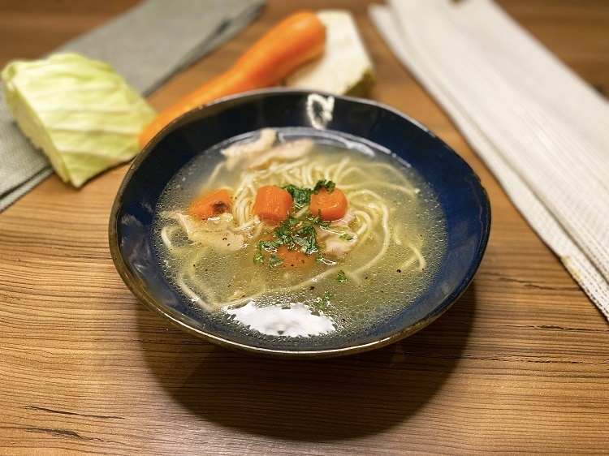

ROSOL

INGREDIENTS
- 1 whole chicken
- 1 onion, quartered
- 2 carrots, chopped
- 2 celery stalks, chopped
- 1 parsnip, chopped
- 1 leek, chopped
- 1 bay leaf
- 6-8 black peppercorns
- Salt to taste
- Noodles or dumplings for serving (optional)
- Fresh parsley for garnish (optional)
INSTRUCTIONS
- Clean the chicken and remove any giblets or organs.
- Place the chicken in a large pot and cover it with water.
- Add the onion, carrots, celery, parsnip, leek, bay leaf, peppercorns, and salt.
- Bring the water to a boil, then reduce the heat to low and simmer for 1-2 hours.
- Remove the chicken from the pot and let it cool.
- Strain the broth through a fine-mesh strainer or cheesecloth.
- Discard the vegetables and season the broth with salt to taste.
- Shred the chicken and add it back to the pot of broth.
- Bring the soup back to a simmer and cook for an additional 10-15 minutes.
- Serve hot with noodles or dumplings, and garnish with fresh parsley if desired.